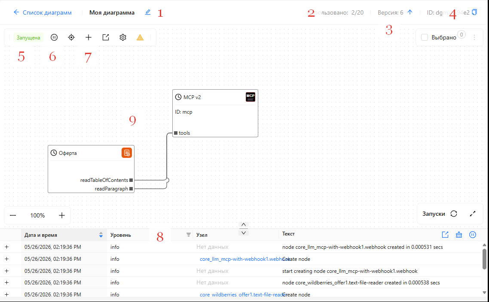
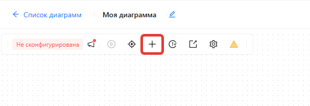
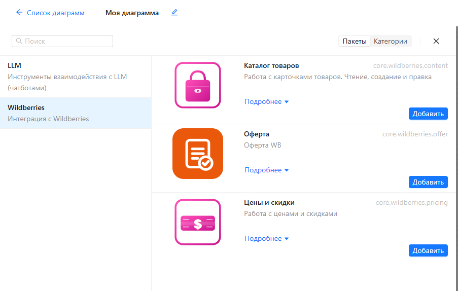
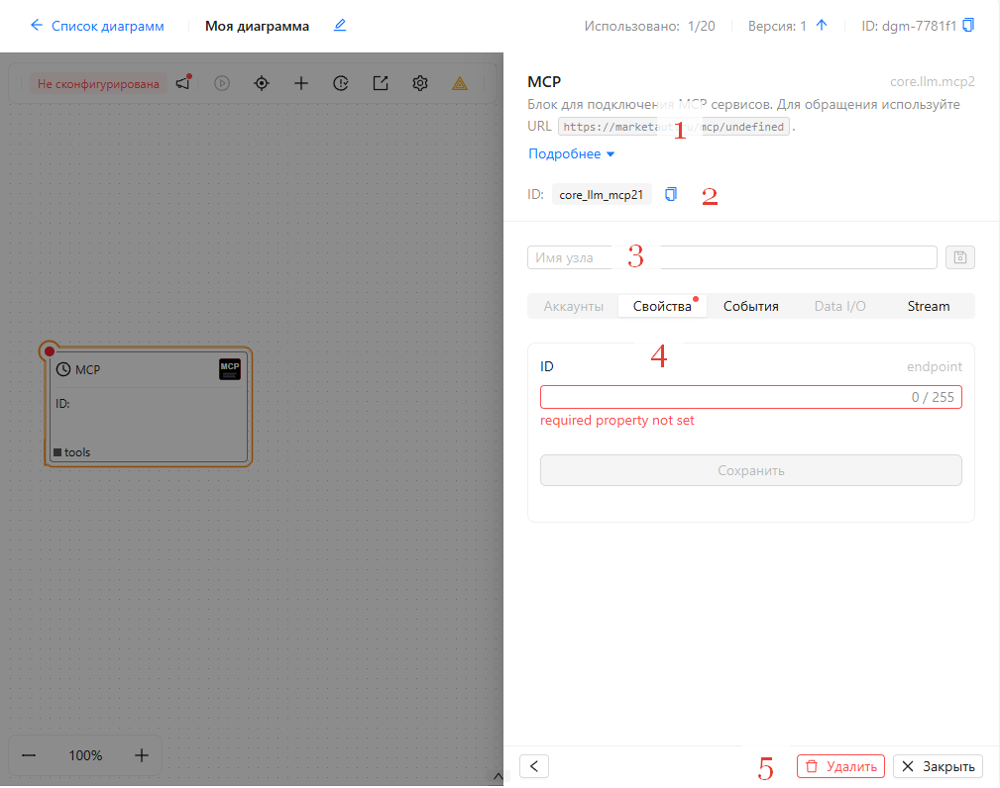
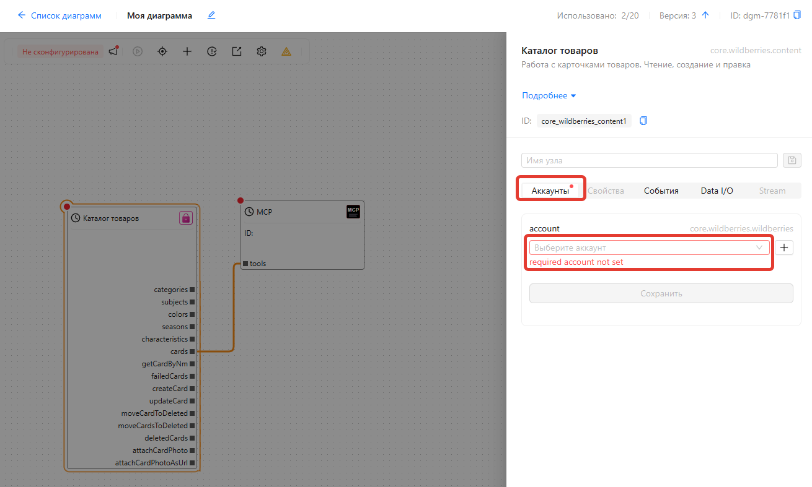
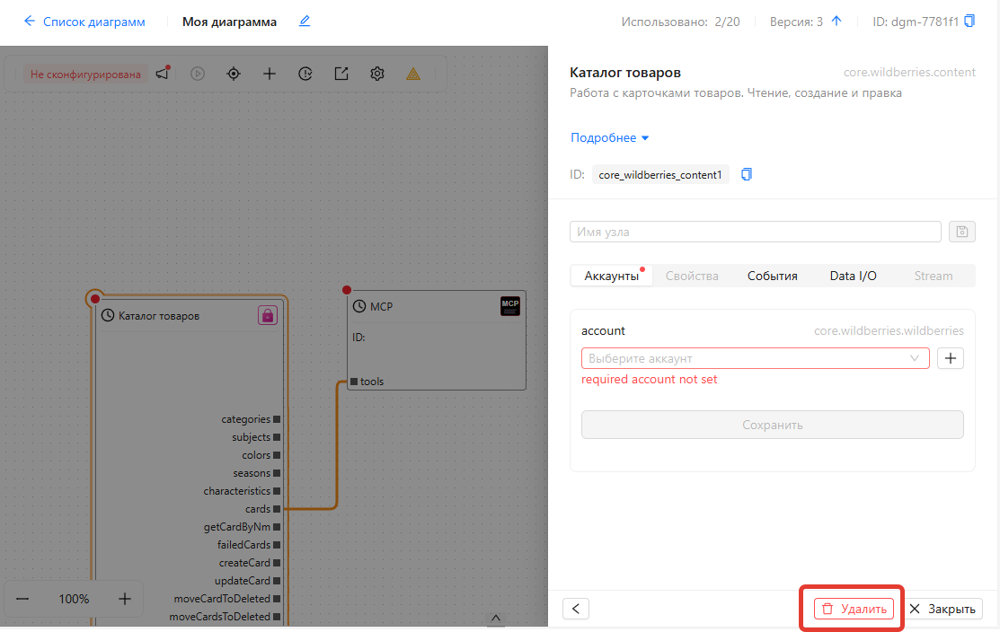
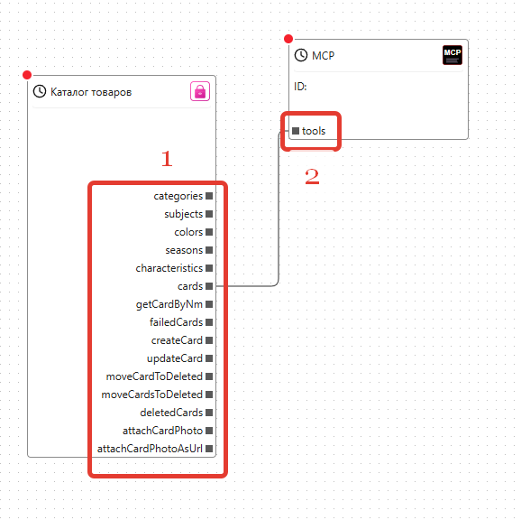
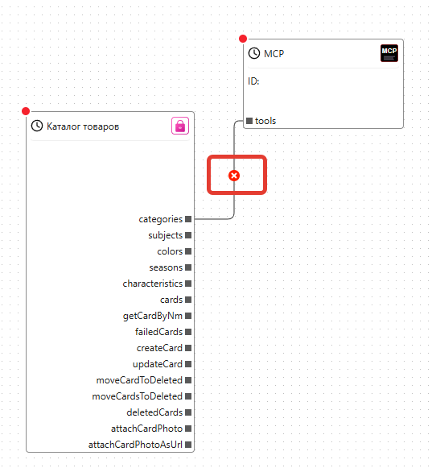

Настройка диаграммы
Для настройки диаграммы:
- Перейдите в Конфигурация -> Диаграммы
- Откройте нужную диаграмму (кнопка с квадратом в строке диаграммы)
Пример окна настройки

(1) Наименование диаграммы и кнопка его редактирования
(2) Текущее и максимальное количество диаграмм в команде
(3) Версия диаграммы
(4) Идентификатор (ID) диаграммы
(5) Текущее состояние диаграммы
(6) Кнопка запуска и останова диаграммы
(7) Кнопка добавления нового элемента на диаграмму
(8) Область лога событий, связанных с диаграммой
(9) Холст с размещенными на нем узлами
Добавление узла
Для добавления узла:
1. Нажмите на кнопку + вверху диаграммы

- Выберите нужную группу
- В группе выберите тип узла и нажмите Добавить

Редактирование узла
Для редактирования узла:
1. Выберите узел на диаграмме.
2. В правой части экрана откроется "шторка" с его свойствами

(1) Описание узла
(2) Уникальный идентификатор (ID) узла
(3) Имя узла
(4) Область свойств узла
(5) Кнопки удаления узла и закрытия шторки
Для редактирования нужного свойства введите его значение на закладке Свойства и нажмите Сохранить
Привязка узла к аккаунту
Многие узлы требуют привязки к аккаунту. Например, узлы для работы с карточками товаров Wildberries нужно привязать к аккаунту, чтобы они работали с нужным магазином.
Вы можете управлять любым количеством магазинов Wildberries, создав для каждого из них свой аккаунт и привязав узлы к интересующим магазинам. Это позволит, например, с помощью ИИ скопировать все карточки товаров из одного магазина в другой.
Для привязки узла к аккаунту:
1. Выберите узел на диаграмме.
2. В правой части экрана откроется "шторка" с его свойствами
3. В шторке перейдите на закладку Аккаунты

- В выпадающем списке выберите нужный аккаунт
Обратите внимание, что предварительно аккаунт нужно создать. Создание аккаунта описано в разделе Аккаунты
Удаление узла
Для удаления узла:
1. Выберите узел на диаграмме.
2. В правой части экрана откроется "шторка" с его свойствами
3. В шторке нажмите кнопку Удалить

Соединение и разъединение узлов
Соединение узлов позволяет задать логику работы платформы.
Например, узел MCP предоставляет ИИ доступ ко всем функциям, которые присоединены к его входу tools.
За счет этого вы можете создавать агентов с нужными функциями, не замусоривая контекст ИИ ненужными инструментами.

Соединять можно только выходы со входами. Выходы (1) всегда находятся на правой стороне узла, а входы (2) - на левой.
Соединение делается за счет перетягивания мышкой выхода одного узла на вход другого.
Для разъединения узлов:
1. Выберите связь, которую хотите удалить (щелкнув на ней мышкой)
2. Нажмите на появившийся значок крестика
